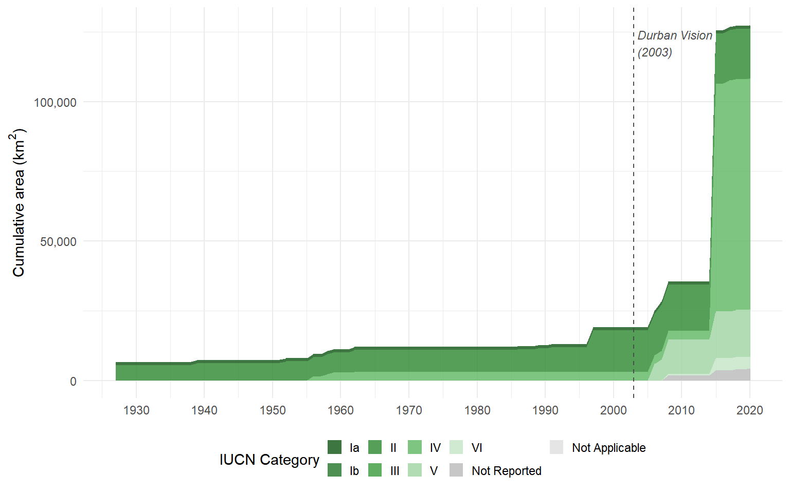
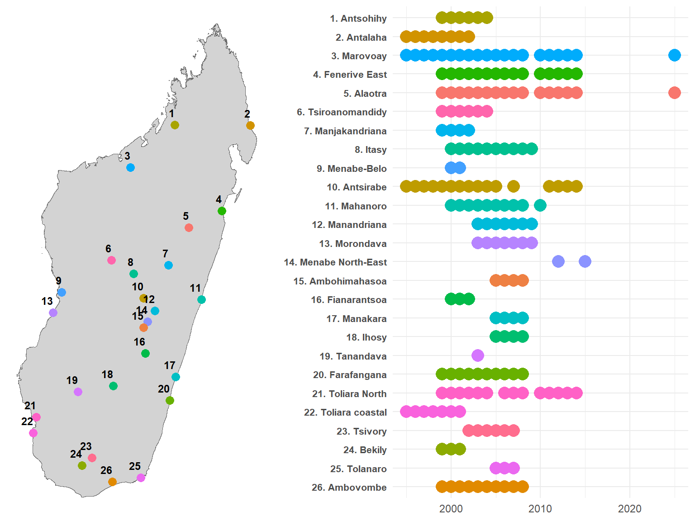

Conservation in Madagascar
Protected areas, governance models, and rural livelihoods
1 Madagascar’s protected area expansion
The international community has committed to protecting 30% of global land and sea by 2030 under the Kunming-Montréal Global Biodiversity Framework. For biodiversity-rich countries like Madagascar, this target translates into a sustained impulsion to expand and strengthen protected area (PA) networks. Madagascar responded early: at the 2003 Durban World Parks Congress, President Ravalomanana announced the Durban Vision — a commitment to triple the country’s PA surface from 1.7 million to 6 million hectares (Kremen, Cameron, and Razafimpahanana 2006), that is, from about 3% to about 10% of the national territory. By 2015, the Système des Aires Protégées de Madagascar (SAPM) had grown from 47 to over 160 protected areas, covering roughly 12% of the national territory.
This expansion was not monolithic. The SAPM introduced a diversity of governance models, ranging from strictly protected national parks under Madagascar National Parks (MNP) management to multipurpose landscapes co-managed by international NGOs and local communities through transferts de gestion. The IUCN classification system captures this spectrum: Category II parks prioritise ecosystem integrity with limited human use, while Categories V and VI allow sustainable resource extraction and community participation.
The welfare consequences of this expansion for adjacent rural communities remain contested. A growing quasi-experimental literature finds heterogeneous effects of PAs worldwide: some studies document negative impacts on local incomes and consumption (Andam et al. 2010; Sims 2010), while others find neutral or positive effects, particularly when PAs generate tourism revenues or ecosystem services (Naidoo et al. 2019). There is ground to assume that the modest positive effects observed elsewhere might not materialise in Madagascar, as extreme poverty prevalence intensifies dependance of local population on natural resources, tourism remains an order of magnitude smaller than in other biodiversity hotspots, and weak governance might undermine stakeholder engagement and benefit-sharing mechanisms. In Madagascar specifically, evidence remains thin and largely cross-sectional (Ferraro, Hanauer, and Sims 2011). The few causal studies focus on deforestation outcomes rather than household livelihoods.
A central question in this debate is whether the governance model of a protected area matters for the people living around it. Strict exclusionary conservation and participatory community-based management represent fundamentally different arrangements with local populations. Yet most empirical studies treat PAs as homogeneous interventions, comparing “protected” with “unprotected” rather than examining how different institutional arrangements mediate livelihood impacts.
2 The Rural Observatory Surveys
This study exploits a rare longitudinal dataset: the Rural Observatory System (ROS), a network of rural observatories conducted across Madagascar between 1995 and 2015. Coordinated by INSTAT then the Ministry of Agriculture, with technical support from IRD and funding from international donors, the ROS surveyed approximately 500 households per observatory per year across up to 28 observatory sites spanning the country’s diverse agroecological zones — from the humid eastern lowlands to the semi-arid south (Razafindrakoto, Roubaud, and Wachsberger 2015).

The ROS operates as a rotating panel: each observatory tracks a fixed set of households, but approximately 15% leave the sample each year through death, migration, or attrition, with replacement drawn from the original sampling frame. Over a decade, cumulative attrition reaches roughly 80% of the initial cohort. While this design limits individual-level panel analysis, it preserves cross-sectional representativeness at each wave: village-year aggregates consistently estimate the same population quantities, making the data well-suited for site-level quasi-experimental methods.
Critically, several rural observatories are located adjacent to protected areas that were extended or created during the survey period (2002–2008). This overlap between a two-decade household survey and staggered conservation interventions provides a natural laboratory for impact evaluation — one that has not been systematically exploited until now.
A 2025 resurvey of two key sites (Marovoay and Alaotra) adds a long-run perspective, enabling us to assess whether short-run effects persist more than two decades after exposure onset. A further 2026 wave is planned to extend coverage to additional observatories.
3 Research question
We ask: does the governance model of a protected area affect household income in surrounding communities?
We compare two natural experiments embedded in the ROS data:
Strict conservation: The 2002 extension of Ankarafantsika National Park (IUCN Category II), managed by MNP. The Marovoay observatory straddles the park boundary, with the Betsiboka River creating a natural exposure–control divide between east-bank villages (adjacent to the park) and west-bank villages (effectively separated by the river).
Multipurpose conservation: The creation of the Lac Alaotra new protected area (IUCN Category VI), managed by Durrell Wildlife Conservation Trust through community-based natural resource management, with effective enforcement from approximately 2008. The entire Alaotra observatory shares dependence on the lake-marsh ecosystem.
Using generalized synthetic control methods (Xu 2017) with an extended donor pool of up to nine additional observatories, we estimate the average treatment effect on the treated (ATT) for equivalised household income. We then extend the analysis to three additional observatory–PA pairs (Farafangana, Toliara North, Fénérive East) where PAs were created in 2006–2007, exploiting the staggered timing to strengthen identification.
The remainder of this document is structured as follows. Chapter 2 describes the data sources and variable construction. Chapter 3 details the identification strategy and estimation methods. Chapter 4 presents the main results for Ankarafantsika and Alaotra. Chapter 5 extends the analysis to three additional sites. Chapter 6 discusses policy implications and outlines plans for the 2026 survey wave.
References
Andam, Kwaw S., Paul J. Ferraro, Katharine R. E. Sims, Andrew Healy, and Margaret B. Holland. 2010. “Protected Areas Reduced Poverty in Costa Rica and Thailand.” Proceedings of the National Academy of Sciences 107 (22): 9996–10001. https://doi.org/10.1073/pnas.0914177107.
Ferraro, Paul J., Merlin M. Hanauer, and Katharine R. E. Sims. 2011. “The Effectiveness of Protected Areas in Reducing Deforestation in Madagascar.” Journal of Environmental Economics and Management 62 (2): 261–77. https://doi.org/10.1016/j.jeem.2011.01.012.
Kremen, Claire, A. Cameron, and A. Razafimpahanana. 2006. “Terrestrial Biodiversity.” In The Natural History of Madagascar, edited by Steven M. Goodman and Jonathan P. Benstead.
Naidoo, Robin, Drew Gerkey, David Hole, Alexander Pfaff, Arden M. Ellis, Christopher D. Golden, Diego Herrera, et al. 2019. “Evaluating the Impacts of Protected Areas on Human Well-Being Across the Developing World.” Science Advances 5 (4): eaav3006. https://doi.org/10.1126/sciadv.aav3006.
Razafindrakoto, Mireille, François Roubaud, and Jean-Michel Wachsberger. 2015. “Les Observatoires Ruraux de Madagascar: Une Infrastructure de Recherche Pour Le Suivi Des Conditions de Vie En Milieu Rural.” In Madagascar: Évaluer Les Politiques Publiques En Période de Crise. Karthala.
Sims, Katharine R. E. 2010. “Measuring the Effects of Protected Areas on Deforestation in Madagascar.” Journal of Environmental Economics and Management 59 (2): 180–90. https://doi.org/10.1016/j.jeem.2009.10.003.
Xu, Yiqing. 2017. “Generalized Synthetic Control Method: Causal Inference with Interactive Fixed Effects Models.” Political Analysis 25 (1): 57–76. https://doi.org/10.1017/pan.2016.2.